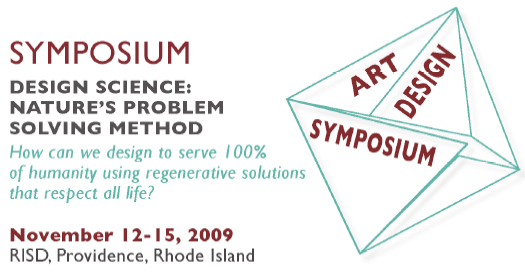

Welcome to Vol. 10 No. 10 of Design Science News, the e-bulletin of the Buckminster Fuller Institute
Design Science News brings you important updates about BFI’s programs and activities as well as news from around the world related to humanity’s option for success and comprehensive design science.Challenge Fellowship Blog Launched!
The Buckminster Fuller Challenge Fellowship, in partnership with the Center for Sustainable Design Studies at Pratt Institute, has been launched for the 2010 cycle of the award program. This year the fellows will be exploring Design Science through the review process of the Challenge. Sahar Ghaheri, Ashley Thorfinnson and John Tucker, graduate students of the Pratt Institute, will be sharing their unique experiences through their new blog: One for 100%. Find out what it takes to apply Design Science to some of the world’s most pressing problems and learn more about the community of scholars, inventors, scientists and artists that partake in the Challenge.
Look out for a new post every week!
Deadline for the 2010 Buckminster Fuller Challenge has passed
Congratualations to everyone that has entered the 2010 cycle of the Buckminster Fuller Challenge. We received over 225 applications from 30 different countries. Stay posted for updates as we plan to announce the semi-finalists in January, finalists in March, and the winner in May 2010. Visit the challenge website for all the latest.
New BFI store item: Limited Edition Postcards!
A set of eight distinct reprints of photographs, drawings, and models of Buckminster Fuller’s; produced for the Whitney Museum of American Art’s exhibit Buckminster Fuller: Starting with the Universe. Each postcard measures 6 inches x 4 inches. Perfect for mailing to a friend, posting on the refrigerator, or decorating your office workspace!
Limited supply available, so order your set along with other popular store items today!
Resources
Guy Nordenson interview in October 2009 issue of The Believer
Reknowned structural engineer Guy Nordenson discusses the relationship between engineering, architecture and sustainability, mega-projects past, current, and future and his relationship with Buckminster Fuller. Excerpt:
“It’s interesting to ask why Bucky now? I think it follows an anthology put out by Lars Muller called Your Private Sky. What the book did was to dig through the archive and highlight the side of Bucky that was the artist, his drawings in particular, the cartoon-like sketches of the 4D House and the ways in which a helicopter could install it. There was an energy in those drawings which I think surprises many people. The artist side as opposed to the intellectual side of Bucky is coming out.“
Visit The Believer website to read more!
BFI Board Member David McConville speaks at West Coast Green about The Buckminster Fuller Challenge.
Metropolis interview with 2009 Challenge winner team leader Ryan Chin
When I first saw computer renderings of the MIT Smart Cities research group’s CityCar a few years ago, I thought I was looking at a pie in the sky vision of a distant (and idealized) future. This compact, stackable electric vehicle is supposed to dock at charging stations throughout a city, allowing lucky urban dwellers to simply swipe a card for an instant, on-the-go rental. But it turns out that a system like this, dubbed Mobility on Demand by the MIT researchers, could become a reality in the tantalizingly near future. The Smart Cities team has already developed three concept vehicles, including the CityCar, it’s currently working with General Motors on a drivable model, and it has an initial pilot program, using an electric bicycle, tentatively lined up for Boston next summer. Ryan Chin, a PhD candidate in the Smart Cities group, predicts that a full-fledged system will happen within the next five years. (A $100,000 prize awarded by the Buckminster Fuller Institute last June should help here.) Recently, I spoke to Chin about the principles of Mobility on Demand, his team’s fleet of lightweight electric vehicles, and the differences between car development in Cambridge and Detroit.
Read the entire interview on the Metropolis website here.
Radical Green
The Omega Center for Sustainable Living is a pretty little building tucked into the calm green exile of Rhinebeck, New York, 100 miles north of Manhattan. Pass into the main room and a long southern exposure throws a halo of light over ponds burbling amid overgrown elephant ears, callalily buds, and banana trees. Just yonder, four outdoor pools descend gently down a hill, their reeds and bulrush stalks fairly singing with a late summer breeze. The building is the newest addition to the Omega Institute for Holistic Studies, a nonprofit that is every bit as New Age as it sounds and where shapeshifting courses and “bootcamp for goddesses” do the work of its sunny mission: “awakening the best in the human spirit.” Hover over the pools too long, though, and one’s treated to an awakening of an entirely different sort. Issuing from those murky depths is a faint sour odor, unmistakable to anyone who’s ever walked past a sewer grate. The center is a living, breathing shrine to shit. It also happens to be one of the greenest buildings in America.
Continue reading on metropolismag.com
Events
Design Science: Nature's Problem Solving Method, a two-day symposium hosted by SNEC
In these times of crisis, finding ways to build regenerative solutions for Humanity's problems that adequately address all environmental issues is critical to our survival. The Design Science symposium will provide an interactive, artifact inspired, collaborative, and trans-disciplinary setting to better understand the comprehensive problem solving approach used in Nature's complex processes.
Click here to learn more and register for the symposium!
Stay up to date on all the latest BFI news and postings!
BFI on Facebook
BFI on Twitter
To unsubscribe from this newsletter, send email to this address.
To never receive email from The Buckminster Fuller Institute, send email to this address.
This email is sent from:
The Buckminster Fuller Institute
{domain.address}